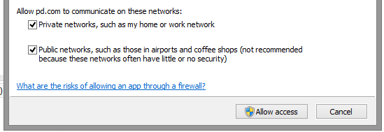
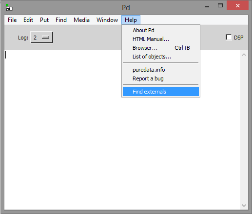
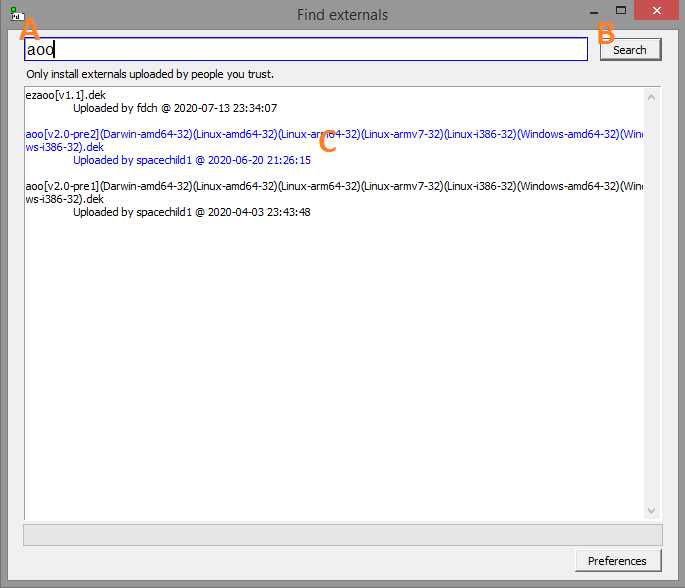

Pure-Data is free software (and open source) and it can be installed on Windows, macOS and Linux.
Download the Installer for Microsoft Windows, 64 bit executable from http://puredata.info/downloads/pure-data.
Run the installer.
When finished run Pd.
On first run the firewall will ask you access permission. Allow access to Private and Public networks.

The first time you run Pd you will be asked to create a documents/pd folder. Accept.
Go to Sound Test
Go to get aoo
Download Intel/64bit from http://puredata.info/downloads/pure-data.
Run it.
The first time you run Pd you will be asked to create a documents/pd folder. Accept.
Go to Sound Test
Go to get aoo
Download Source tarball from http://puredata.info/downloads/pure-data.
Open a Terminal and install dependencies:
Type:
sudo apt-get install libasound2-dev tcl tk
When finished close the terminal.
Uncompress your downloaded Pd source.
Navigate to the “src” folder. Open a terminal at the "src" folder.
Type to start compiling:
make -f makefile.gnu
When finished do cd ../bin
Then do ./pd
The first time you run Pd you will be asked to create a documents/pd folder. Accept.
Go to Sound Test
Go to get aoo
Make sure that your computer volume is not loud, preferably very soft (you are surely familiarized on how to control the computer level and probably your external speakers) normally a button near the clock with a speaker icon. Here some images on mac, windows and linux:
Run Pd and go to the menu Media / Test Audio and MIDI...
Press the “80” button (in the “testtone.pd” window) and slowly increase the volume of your computer until you clearly hear a tone similar to the telephone before dialing. (if you use headphones, be careful when you are putting them back in your ears, I insist.)
Surely with this test you've heard the tone and you know how to adjust the volume when using vrrl. You can close the “testtone.pd” window.
You will need the lowest latency possible in your system. Around 8ms should be possible on most systems.
Go to the menu Media / Audio settings. and change Delay (msec) to 8.
If you have more than one sound card select which one Pd will use.
You can check if audio is ok by doing again menu Media / Test Audio and MIDI...
You surely need to use the ASIO driver. Go to the menu Media / ASIO (via portaudio).
Change the delay to 8ms, block size to 64 and select the ASIO driver of your soundcard. Then press "Save All Settings".
You can check if audio is ok by doing again menu Media / Test Audio and MIDI...
Note: You can use http://www.asio4all.org/ with your built in soundcard.
On some Windows versions as “Home” or “Starter” you might not get sound or find other inconveniences. Before “giving up” try opening Pd with the “Run as Administrator” option. For this right-click on Pd's icon and select "Run as Administrator".
Go to menu Help / Find externals
 A: Type "aoo".
B: click on the "Search" button.
C: click on the latest "aoo" version available.
Select "yes" to install with defaults settings.